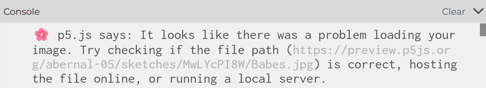
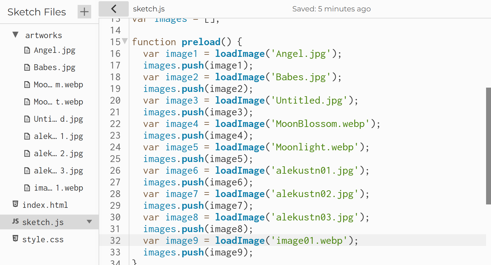
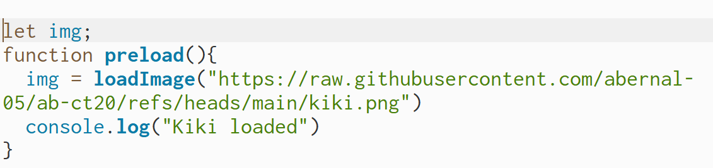

Home
Here is my week 10 documentation. I finalized what artwork I'd like to use in my final project. I reviewed how to
crop uploaded images in p5js, and started creating a function that randomly picks a photo from an array and crops it
a certain way. When I first tried running this sketch, I realized that should upload my images to github, rather than
to my sketch file. I noticied this error because my images weren't loading, and referenced an older in class activity
that worked with uploaded images to see if I had done something differently.


